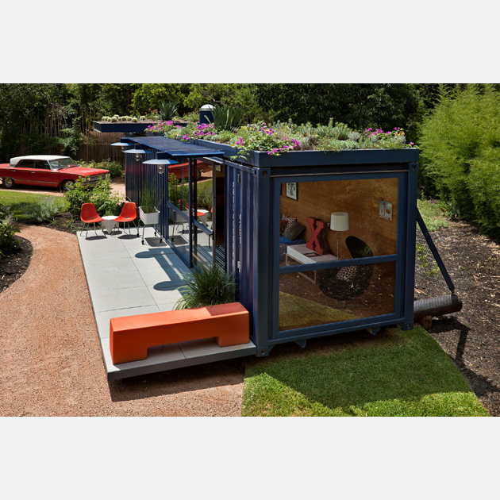
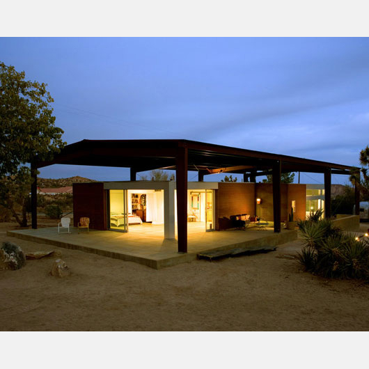
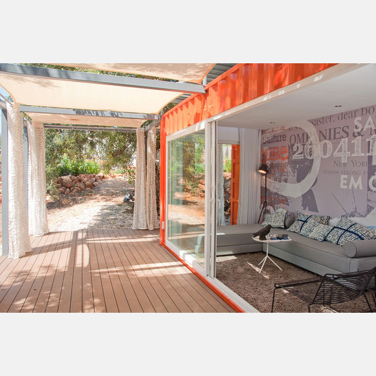
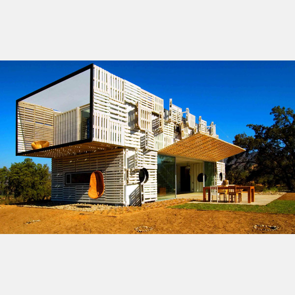

Início >> Reciclagem
O que reciclagem?
A menos que você tenha estado em outro planeta no último século, provavelmente já ouviu falar disso. Reciclar é o processo de decompor e reutilizar materiais que seriam jogados fora como lixo. Muitas comunidades e empresas facilitam a reciclagem, colocando recipientes etiquetados ao ar livre para uso público, ou fornecendo caixas para proprietários de casas e empresas que tenham captador na calçada.
Existem inúmeros benefícios para a reciclagem e, com tantas novas tecnologias que tornam ainda mais materiais recicláveis, com a ajuda de todos, podemos limpar nossa Terra. A reciclagem não só beneficia o meio ambiente, mas também tem um efeito positivo na economia.
Reciclar é relatado ao longo da história humana, mas já percorreu um longo caminho desde a época de Platão, quando os seres humanos reutilizaram ferramentas quebradas e cerâmica quando os materiais eram escassos. Hoje, há uma infinidade de benefícios provenientes da reciclagem, bem como toneladas de itens que podem ser reciclados.
Shipping Container Guest House, com jardim no telhado.
Este contêiner faz uma fantástica hospedaria - com um jardim na cobertura. E é um design super sustentável. Da Poteet Architects, fica ao sol no sul de San Antonio, Texas. O jardim da cobertura é erguido um pouco acima do topo do contêiner. Desta forma, não só fornece sombra, mas há fluxo de ar para fornecer refrigeração durante os meses quentes do verão do Texas. O interior é isolado com espuma de spray e murado com compensado de bambu sustentável (idem ao chão). Naturalmente, a água cinza da pia e da banheira é reciclada para o jardim da cobertura. E o banheiro é um banheiro de compostagem. Não para todos, mas estamos falando ambientalmente. E o contêiner inteiro "flutua" em um bloco de postes de telefone reciclados. Mas a melhor parte - é uma linda casa de hóspedes, por dentro e por fora. Design e estilo, com consciência. Não têm como ficar melhor.
Rimrock Ranch House: Reciclável, reutilizável e naturalmente legal.
Nas profundezas do deserto de Pioneertown, na Califórnia, esta casa simples e sustentável foi projetada pelo arquiteto Lloyd Russell como a “estrutura definitiva do deserto”. Uma impressionante cobertura de aço compõe o principal abrigo da casa, sob o qual o design da casa ecológica toma forma. A casa é feita de materiais reciclados, tornando o velho novo de novo e bonito também. Essencial no ponto de acesso de areia, a casa de dossel inovadora foi projetada para regular três vezes a temperatura da casa - primeiro, para refletir os raios do sol e o calor longe da casa; segundo, para sombrear a casa; e terceiro, para agir como um amortecedor de vento, permitindo que a brisa refrescante sopre através da estrutura. Os 1.600 pés quadrados a casa principal apresenta paredes de aço corrugado enferrujadas com amplas e contemporâneas extensões de vidro que se abrem para trazer o exterior para dentro e interiores mais frescos
Nomad Living, criada a partir de um contêiner.
A Studio Arte tem vindo a explorar o conceito de vida nômade através da sua prática arquitectónica e este retiro de contentores localizado no Algarve, Portugal, é o seu primeiro protótipo. A casa é um refúgio móvel, sustentável e econômico, construído de acordo com os padrões de código de construção locais e está completamente contido em uma unidade. O contêiner de transporte foi ajustado para incluir recursos mecânicos, de engenharia e de arquitetura, a fim de oferecer tudo o que é necessário em um espaço único.
Manifesto House: Paletes de madeira + contêineres.
A Manifesto House, projetada pelos arquitetos chilenos e pela empresa de construção sustentável Infiniski, é uma maravilha feita pelo homem! Embora não seja totalmente pré-fabricada, esta casa em Curacavi, no Chile, foi construída com materiais pré-fabricados para permitir uma construção rápida, econômica e sustentável. A um custo de apenas 79.000 €, esta casa eco é feita de dois 40 pés. e dois 20 pés. Contentores reaproveitados As paletes de madeira recicladas que revestem o exterior da casa não só dão à casa uma aparência legal, como também proporcionam um arrefecimento natural através de sombra e ventilação. Cool em mais de uma maneira, esta moderna casa reciclada apresenta interiores espaçosos e arejados, separados do exterior por janelas deslizantes do chão ao teto. Os interiores são em grande parte conceitos abertos e apresentam um design de interiores minimalista e elegante que é tão simples quanto o conceito da casa como um todo. Do outro lado das paredes de vidro, uma área de entretenimento ao ar livre abrigada por um grande toldo oferece um espaço ao ar livre. A casa sustentável possui bombas de calor geotérmicas para aquecimento e resfriamento.